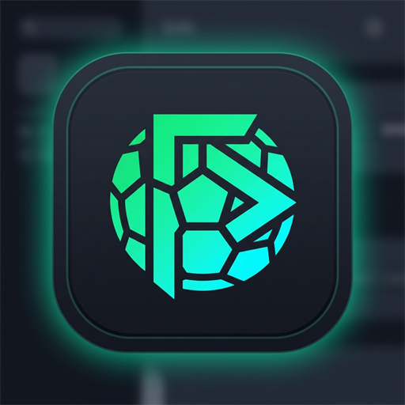

FootDroid TV
00:00

FootDroid TV📺 Прямой эфир будет доступен в высоком качестве 1080p Full HD на канале.
Управление FootDroid TV и проверка обновлений
Удобный плеер спортивных трансляций для больших экранов Smart TV и приставок. Свежие прямые эфиры футбольных матчей европейских и мировых лиг в высоком качестве Full HD.